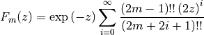
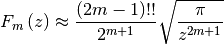
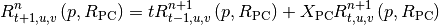
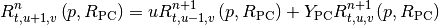
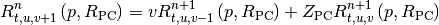
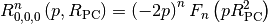

Hermite Integral¶
Hermite integrals can be used to evaluate electronic integrals. Here is an overview of the mathematical funtions used in the Hermite integrals.
Boys function¶
The boys can be evaulated as:

And for large $z$ larger than 25 it can be approximated as:

Hermite integral¶
The Hermite integrals is given as the following recurrence relations:



With the boundary condition:
